TrBlazeUI — Developer Guide (as-built screen map)
Last updated: 2026-08-25 (targeted runtime verification) Verification status: ✅ RUNTIME-VERIFIED. Anonymous demo visitor exercised /components/dialog and /verify-techieblog at desktop and 390px. Nested Dialog/Select behavior, focus, mouse/keyboard interaction, attribute forwarding, render status, layout bounds and zero horizontal overflow passed; ui-techieblog.spec.js passed 76/76. Release build: 0 warnings / 0 errors.
What this document is. The screen-by-screen, as-built map a developer uses to chase a bug or catch AI-hallucinated code. TrBlazeUI is a component library with a demo application and has no database, no API, no stored procedures, and no auth — so the usual page → service → data-access → proc lineage collapses to demo page → demo-shared composition → library component → primitive → JS interop / service. There is exactly one role: the anonymous demo visitor.
- 1. Roles & navigation
- 2. App shell & shared services
- 3. Screen map
- 2.1.0 screens (added / changed by REQ-UI-017 — all runtime-verified 2026-08-11)
- 4. Library lineage — how a styled component resolves
- 5. Known issues
- 6. Runtime screenshots
- 6.1 The 2.1.0 surface (captured 2026-08-11 at handoff, 1366×900)
- 6.2 Earlier sampled key screens (2026-06-30;
datatable.pngrecaptured 2026-07-21)
1. Roles & navigation#
- Role: Anonymous demo visitor (no login). One sidebar navigation drives the whole app.
- Hosts:
Demo.Server(5183/7172),Demo.Wasm(5184/7173),Demo.Auto(5185/7174) — all render the SAMEDemo.SharedRazor Class Library, so the screen map below is host-independent. - Nav source:
demos/TrBlazeUI.Demo.Shared/Shared/MainLayout.razor(+.razor.cs), withHorizontalNav.razor/LayoutToggle.razorfor the horizontal/vertical layout switch,DarkModeToggle.razorfor theme, andCommandSearch.razorfor the command palette.
flowchart TB Shell["MainLayout (sidebar + topbar)"] --> Home["/ (Index)"] Shell --> Arch["/architecture"] Shell --> GS["/getting-started"] Shell --> Comp["/components (83 demo pages)"] Shell --> Prim["/primitives (15 demos)"] Shell --> Charts["/charts/* (6 demos)"] Shell --> Icons["/icons (browser)"] Shell --> Theme["/ (DynamicThemeDemo)"] Shell --> New["/whats-new (2.1.0 release page)"]
2. App shell & shared services#
| Element | File | Responsibility |
|---|---|---|
MainLayout | Shared/MainLayout.razor(.cs) | Sidebar + topbar shell; hosts <PortalHost/>, theme + layout toggles, command search |
HorizontalNav / LayoutToggle | Shared/HorizontalNav.razor, Shared/LayoutToggle.razor | Switch between vertical sidebar and horizontal top nav |
DarkModeToggle | Shared/DarkModeToggle.razor | Adds/removes .dark on <html> |
CommandSearch | Shared/CommandSearch.razor | Command-palette page jump |
ThemeService | Services/ThemeService.cs | Current theme + light/dark state |
CollapsibleStateService | Services/CollapsibleStateService.cs | Sidebar/collapsible persistence (localStorage) |
MockDataService | Services/MockDataService.cs | Sample rows/series for DataTable + Chart demos (no DB) |
LayoutService | Services/LayoutService.cs | Horizontal/vertical layout state |
There is no data-access layer: demo data comes entirely from MockDataService held in memory. Any code path that appears to read a database, call an API, or invoke a stored proc would be hallucinated — there is none in this repo.
3. Screen map#
Each demo page lives under demos/TrBlazeUI.Demo.Shared/Pages/ and composes one library component family. The full set is large — 117 .razor pages in total (83 component demos + 15 primitive demos + 6 chart demos + icons + 5 top-level pages + /whats-new + 3 /verify-* test harnesses); the table below maps the representative/structural screens. Every /components/{x} page follows the same lineage shape: demo page → <Library component> → primitive (if any) → JS interop / service.
| Screen | Route | Demo page file | Library surface exercised | Lineage notes |
|---|---|---|---|---|
| Home | / | Pages/Index.razor | (overview) | Confirms CSS loaded |
| Architecture | /architecture | Pages/Architecture.razor | (static content) | — |
| Getting Started | /getting-started | Pages/GettingStarted.razor | (static content + snippets) | — |
| Dynamic Theme | (page) | Pages/DynamicThemeDemo.razor | ThemeService, CSS variables | Live theme variable editing |
| Components index | /components | Pages/Components/Index.razor | grid of 83 component links | — |
| Button | /components/button | Pages/Components/ButtonDemo.razor | Button, ButtonIcon | no primitive; pure styled |
| Sidebar | /components/sidebar | Pages/Components/SidebarDemo.razor | Sidebar (22 parts) → CollapsibleStateService + sidebar.js | ⚠ source trips REQ-NFR-005 (IDE0031) |
| Dialog | /components/dialog | Pages/Components/DialogDemo.razor | Dialog → Dialog primitive → PortalHost + portal.js/focus-trap.js | Nested Dialog and Select surfaces are reactive inside portalled content; renders ✓ + looks-right ✓ (runtime-confirmed 2026-08-25 at 1280px and 390px). |
| Select | /components/select | Pages/Components/SelectDemo.razor | Select → Select primitive → positioning.js/select.js | custom dropdown (overlay-safe). ✅ TR-003 fixed (REQ-UI-014, 2026-07-22): trigger <button role="combobox"> now emits a default aria-labelledby → the SelectValue span (SelectTrigger.razor GetDefaultLabelledBy()), so it has an accessible name from first render; styled SelectTrigger adds an AriaLabel param. axe button-name = 0. |
| DataTable | /components/datatable | Pages/Components/DataTableDemo.razor | DataTable → MockDataService | sort/filter/paginate/select; 2.0.0: ShowToolbar defaults false (opt-in), pagination gated on ShouldShowPagination() = TotalItems > PageSize. renders ✓ + looks-right ✓ (runtime-confirmed 2026-07-21, 40 rows real data) |
| Toolbar | /components/toolbar | Pages/Components/ToolbarDemo.razor | Toolbar/ToolbarGroup/ToolbarButton/ToolbarToggleButton/ToolbarSeparator | composes Button/DropdownMenu |
| RichTextEditor | /components/rich-text-editor | Pages/Components/RichTextEditorDemo.razor | RichTextEditor → quill-interop.js + HtmlSanitizer | sanitized HTML output |
| MarkdownEditor | /components/markdown-editor | Pages/Components/MarkdownEditorDemo.razor | MarkdownEditor → Markdig + markdown-editor.js | live preview |
| Primitives index | /primitives | Pages/Primitives/Index.razor | 15 headless-primitive demos | unstyled behavior + ARIA |
| Charts | /charts/{area,bar,line,pie,radar,radial} | Pages/Charts/*ChartDemo.razor | Chart → Blazor-ApexCharts → MockDataService | 6 types |
| Icons | /icons | Pages/Icons/* | LucideIcon / HeroIcon / FeatherIcon | generated *IconData.cs |
| What's new | /whats-new | Pages/WhatsNew.razor | live 2.1.0 examples (splatting, utility scale, retuned tokens) | release page added in 2.1.0. renders ✓ (2026-08-11) |
| Verify harnesses | /verify-techieblog, /verify-ui016, /verify-ui014 | Pages/VerifyTechieBlog.razor, VerifyUi016.razor, VerifyUi014.razor | fixture pages driven by the matching tests/verify/*.spec.js | not consumer-facing; /verify-techieblog renders ✓ + looks-right ✓ (runtime-confirmed 2026-08-25, 76/76 checks). |
2.1.0 screens (added / changed by REQ-UI-017 — all runtime-verified 2026-08-11)#
| Screen | Route | Demo page file | Library surface exercised | Lineage notes |
|---|---|---|---|---|
| Prose | /components/prose | Pages/Components/ProseDemo.razor | Prose | typographic wrapper for rendered markdown/HTML; wide tables scroll inside themselves (0px page overflow @390) |
| Stat | /components/stat | Pages/Components/StatDemo.razor | StatTile, StatGroup | pure styled; no primitive |
| Timeline | /components/timeline | Pages/Components/TimelineDemo.razor | Timeline, TimelineItem | pure styled |
| Stepper | /components/stepper | Pages/Components/StepperDemo.razor | Stepper, StepperItem | ⚠ Current cascades by value (not IsFixed) — that was the aria-current bug found while building this page |
| AnchorNav | /components/anchor-nav | Pages/Components/AnchorNavDemo.razor | AnchorNav → JS interop | in-page nav with scrollspy |
| SortableList | /components/sortable-list | Pages/Components/SortableListDemo.razor | SortableList | button-driven reordering — deliberately not drag-only, so it is keyboard/SR operable |
| PasswordStrength | /components/password-strength | Pages/Components/PasswordStrengthDemo.razor | PasswordStrength | pure styled meter |
| CodeBlock | /components/code-block | Pages/Components/CodeBlockDemo.razor | CodeBlock → clipboard JS | ⚠ copy falls back to execCommand off a secure origin, then reports "Press Ctrl+C" — never silently no-ops |
| CenteredPanel | /components/centered-panel | Pages/Components/CenteredPanelDemo.razor | CenteredPanel | layout wrapper |
| Rating | /components/rating | Pages/Components/RatingDemo.razor | Rating | 2.1.0: options are <button role="radio"> with roving tabindex + literal aria-checked; ReadOnly → role="img"; new Focusable |
| Tabs | /components/tabs | Pages/Components/TabsDemo.razor | Tabs → Tabs primitive | 2.1.0: literal aria-selected; aria-controls only when a panel exists; TabsContent panel stays mounted (hidden) |
| Input / Textarea | /components/input, /components/textarea | Pages/Components/InputDemo.razor, TextareaDemo.razor | Input, Textarea → TextValueSync | 2.1.0: DOM value / render-tree value / parent value tracked separately so the Server echo can't overwrite typing; optional DebounceMilliseconds |
| NavigationMenu | /components/navigation-menu | Pages/Components/NavigationMenuDemo.razor | NavigationMenu | 2.1.0: top-level links Tab reachable; menuitem semantics only inside a real role="menu" popup |
| Item | /components/item | Pages/Components/ItemDemo.razor | Item, ItemGroup, ItemSeparator | 2.1.0: role="listitem" inside ItemGroup; separator leaves the a11y tree |
| Typography | /components/typography | Pages/Components/TypographyDemo.razor | Typography* | 2.1.0: Size replaces baked-in size classes; ClassNames.cn is variant-aware |
(The remaining ~68 component demos and ~14 primitive demos follow the identical lineage shape; they are enumerated in the demo Pages/Components/ and Pages/Primitives/ folders and indexed in the BRD §9 feature catalog.)
4. Library lineage — how a styled component resolves#
flowchart LR Demo["Demo page (Pages/Components/XDemo.razor)"] --> Styled["Styled component (src/TrBlazeUI.Components/Components/X)"] Styled --> Prim["Headless primitive (src/TrBlazeUI.Primitives/Primitives/X)"] Styled --> CSS["trblazeui.css (Tailwind v4, pre-built)"] Prim --> Svc["Primitive services (Portal/Positioning/Focus/Keyboard)"] Prim --> JS["JS interop (portal.js, focus-trap.js, positioning.js, ...)"] Styled --> ThirdParty["3rd-party (ApexCharts / Quill / Markdig+HtmlSanitizer)"]
A reader chasing a bug starts at the demo page, drops into the styled component (.razor markup + .razor.cs logic), then into the primitive it composes (for behavior/ARIA), and finally into the relevant JS interop file or DI service. Symbols that don't resolve to a real file/component in src/ are hallucinations — verify against the folders listed in docs/TrBlazeUI-Architecture.md §4.
5. Known issues#
- ⚠ UAT 2026-08-25 — overlays (REQ-UI-004): nested Dialog and portalled SelectContent inside DialogContent do not render their second portal; see TechieBlog TR-066/TR-067.
- ⚠ UAT 2026-08-25 — attribute forwarding (REQ-UI-012): DatePicker and TimePicker accept but drop unmatched attributes; see TR-072.
- ⚠ UAT 2026-08-25 — component gaps (REQ-UI-018): open findings cover Select initialization, delayed text echoes, Rating focus, Item overflow, StatTile hooks, utility families, and AnchorNav navigation; see TR-068…TR-074.
- ⚠ UAT 2026-08-25 — Codex packaging (REQ-FN-010): clean NuGet-only consumers receive no library-owned Codex agent; see TechieFlow TR-003.
- Sidebar Release build error (REQ-NFR-005) — Resolved 2026-06-30. The IDE0031 hits were event-accessor null guards where
?.is illegal (CS0131); fixed via a justified one-rule.editorconfigdowngrade. Release build is clean (0/0). - XML-doc coverage (REQ-FN-003) — Resolved 2026-06-30. Now 100% on public members; CS1591 suppression removed and build-enforced.
- NativeSelect in MAUI Hybrid overlays — platform limitation (WebView2); use
<Select>inside overlays (docs/OldDocs/TrBlazeUI-Issues-Report-1.md#2). Not a library defect. - Doc fix (found at runtime 2026-06-30): the DataTable demo route is
/components/datatable(no hyphen), not/components/data-tableas earlier drafts stated — corrected above and in the UsageGuide. - DataTable default chrome / Dialog off-viewport / transparent popover (REQ-UI-016) — Resolved 2026-07-21. AstroLyfe UAT findings TR-010/011/012:
ShowToolbarnow defaultsfalseand pagination auto-hides for a single page;DialogContent/AlertDialogContentclamped to the viewport (topwas −245/−305px, now +16px); library now ships zero-specificity:where()theme-token fallbacks so popovers stay opaque without host tokens. Verified 21/21 headless —tests/verify/ui-ui016.spec.js. - ⚠ Breaking for consumers (2.0.0):
DataTable.ShowToolbardefault flippedtrue→false. Any grid relying on the implicit toolbar must now passShowToolbar="true". - ✅ RESOLVED — SelectTrigger accessible name (TR-003, REQ-UI-014) — Fixed + verified 2026-07-22 (
*fix-issues). The primitiveSelectTriggernow emits a defaultaria-labelledby→ theSelectValuespan id (GetDefaultLabelledBy()→SelectContext.ValueId), giving the<button role="combobox">a non-empty accessible name from first render; it defers to a non-empty splattedaria-label/aria-labelledby. The styledSelectTriggergains anAriaLabelparam (emitsaria-label, overrides the default per ARIA precedence). Verified on/verify-ui014(tests/verify/ui-ui014.spec.js, 8/8): axebutton-name= 0 violations; valued/placeholder/AriaLabel cases all named. Consumers can drop their per-Selectaria-labelworkaround on upgrade to 2.0.1. - ✅ TR-014 (AstroLyfe post-upgrade) — Dialog double-offset — DEFENSIVELY HARDENED — Fixed 2026-07-22 (owner-requested). The double-offset couldn't be reproduced on current source, but
DialogContent/AlertDialogContentwere switched from translate-based centering to auto-margin centering (fixed inset-0 m-auto grid h-fit max-h-[calc(100vh-2rem)]) so the top can never go abovey=0regardless of any straytransform/translate−50% offset stacking — the clipping is now structurally impossible. Slide animations dropped for zoom+fade; Sheet/Drawer untouched;trblazeui.cssregenerated. Verified 23/23 (ui-ui016.spec.js): settledtransform:noneandtranslate:none,top=16px@1366/1280/390; AlertDialog centers on-screen (top=269). - ⚠ OPEN — TR-066: a
Dialogdeclared inside anotherDialog'sDialogContentnever opens. Found 2026-08-11 while building the 2.1.0 demo pages. Pre-existing, not a 2.1.0 regression — it reproduces against the 2.0.1PortalServicesource. The inner trigger keepsaria-expanded="false", no second portal registers, and a direct.click()throughpage.evaluate(bypassing hit testing) does nothing either — so it is a render-propagation problem, not interception. An ordinary<Button OnClick>in the same portal content does work, which narrows it to the nested dialog's own state change. Likely culprit: theCascadingValueinDialog.razorskips its subtree becauseobjContextis the same instance mutated in place, leaving the nestedDialogPortalwith no parent render to ride on. Two candidate fixes were tried and reverted rather than shipped unproven: re-renderingPortalHostwhen the registry changes during its own render, and registering fromOnStateChangedinstead ofOnParametersSet. Supported workaround (demonstrated on/components/dialog): compose stacked dialogs as siblings, each with its own@bind-Open. Full write-up:docs/TechieBlog-TrBlazeUI-Feedback.md→ TR-066. - Log noise on circuit teardown (cosmetic, observed 2026-08-11). Closing a browser tab that had an open
SelectlogsJSDisconnectedExceptionfromSelectContent.DisposeAsync(src/TrBlazeUI.Primitives/Primitives/Select/SelectContent.razor:287). It is the standard Blazor Server dispose race — the circuit is already gone whenIJSObjectReference.DisposeAsync()runs — and has no user-visible effect, but the throw should be caught so hosts don't log a stack trace per disconnect. Deferred, not a release blocker. - ✅ RESOLVED 2.1.0 — the whole TechieBlog cycle (TR-001…TR-065, REQ-UI-017). Catalog-wide attribute splatting (measured 344/344 + 59/59 by
tools/splat-audit, not asserted);Rating/Tabs/NavigationMenu/MarkdownEditor/ItemWCAG corrections;Input/Textareakeystroke loss on a Server circuit;SelectValuefirst-paint text; ordered portals so stacked dialogs are clickable by construction (TR-060); the full Tailwind utility scale intrblazeui.css(~906 KB min / ~97 KB gz, was ~88 KB); tokens re-solved as a contrast matrix bytools/token-contrast.py(18 failing pairings → 0,--input1.26:1 → 3.11:1); and 9 new components. Verified 65/65 + 15/15 headless. - ⚠ Breaking for consumers (2.1.0):
Ratingoptions changed from<span role="radio">to<button role="radio">;TabsContentalways renders its panel element; the light--input/--ringand dark--input/--accent/--destructive-foregroundtokens moved for contrast; the CSS bundle grew ~10×. See the CHANGELOG's "Behaviour changes to review before upgrading". - Status is reflected in
docs/TrBlazeUI-Checklist.md(all REQs terminal). Screens are runtime-verified — the 2.1.0 set on 2026-08-11 (25/25), earlier key screens with screenshots indocs/screenshots/TrBlazeUI/; run*devguide TrBlazeUI --updatefor a fresh sweep after the next change.
6. Runtime screenshots#
Captured from the booted Blazor Server demo via headless Chromium (Playwright). These prove the as-built screens render with real data and correct layout.
6.1 The 2.1.0 surface (captured 2026-08-11 at handoff, 1366×900)#
What's new — 2.1.0 release page (/whats-new)#
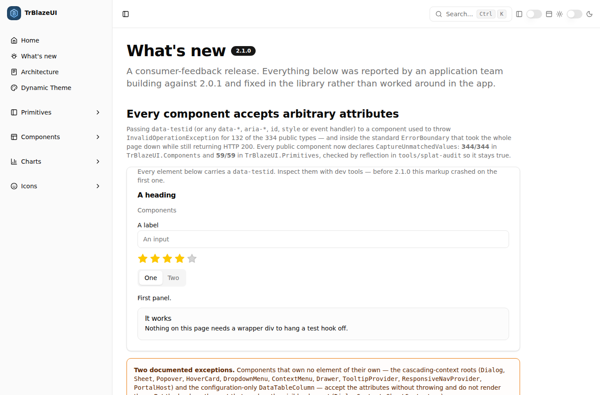
Prose (/components/prose)#
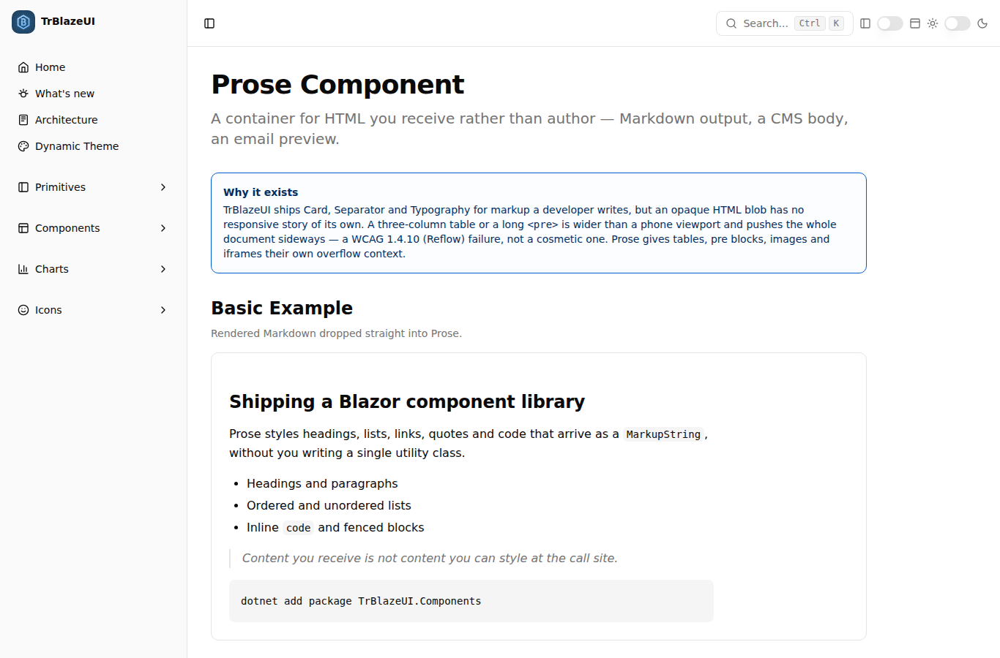
StatTile / StatGroup (/components/stat)#
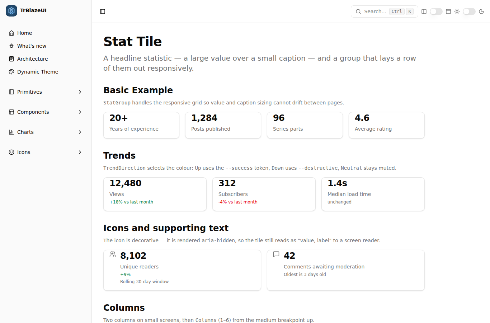
Timeline (/components/timeline)#
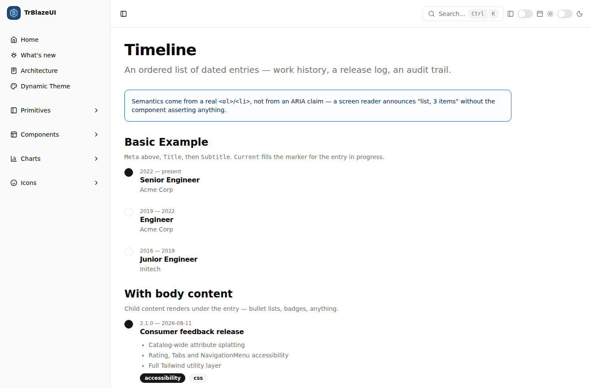
Stepper (/components/stepper)#
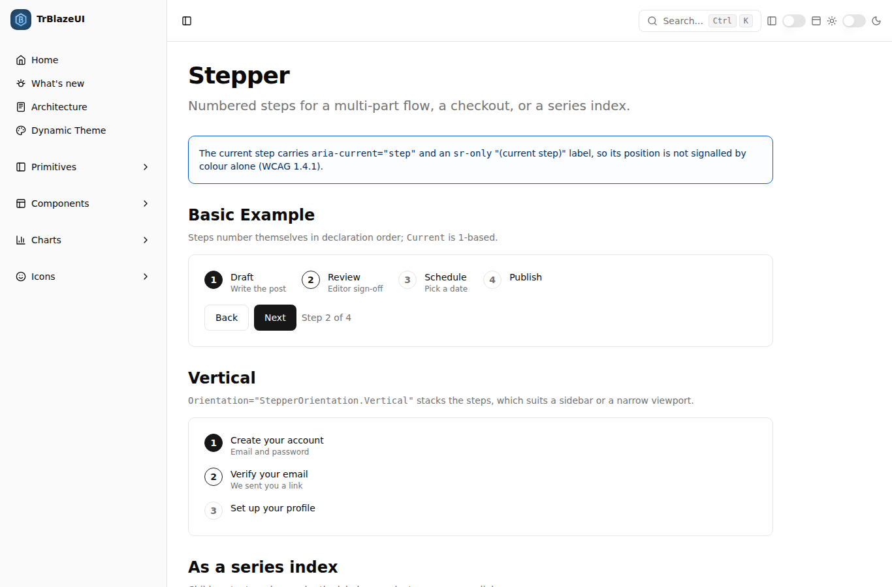
AnchorNav (/components/anchor-nav)#
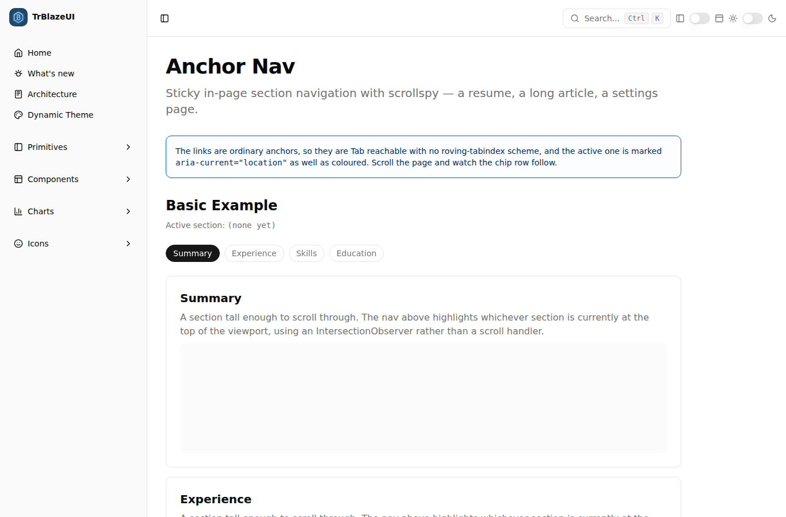
SortableList (/components/sortable-list)#
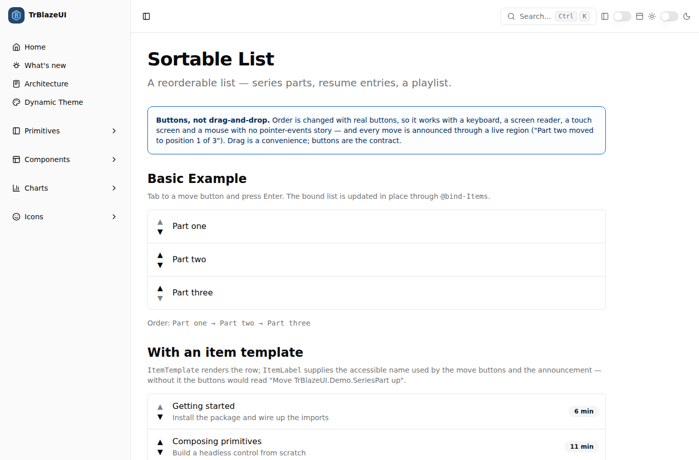
PasswordStrength (/components/password-strength)#
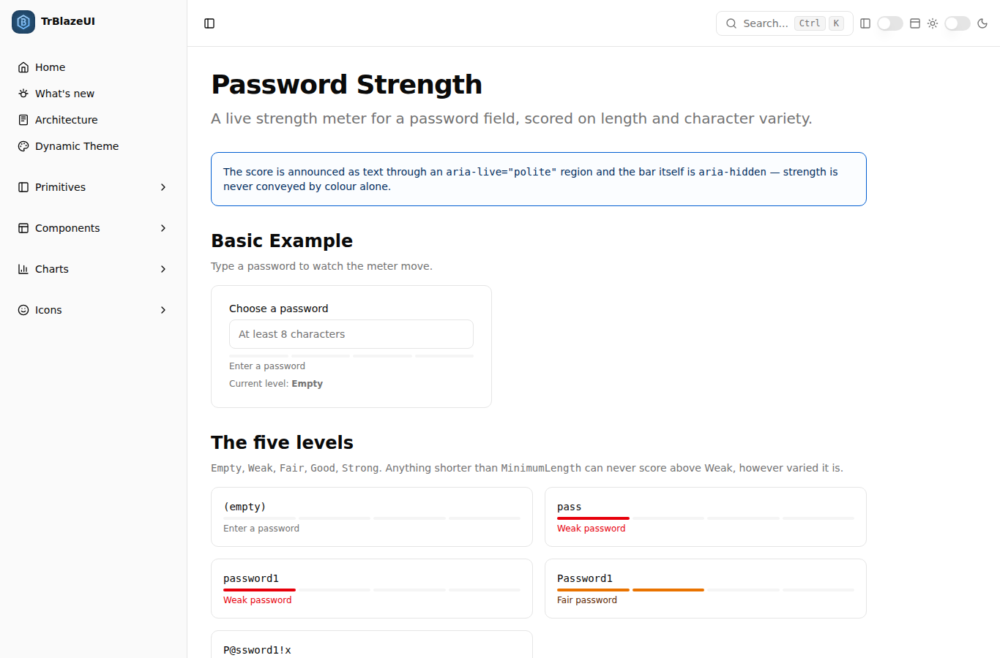
CodeBlock (/components/code-block)#
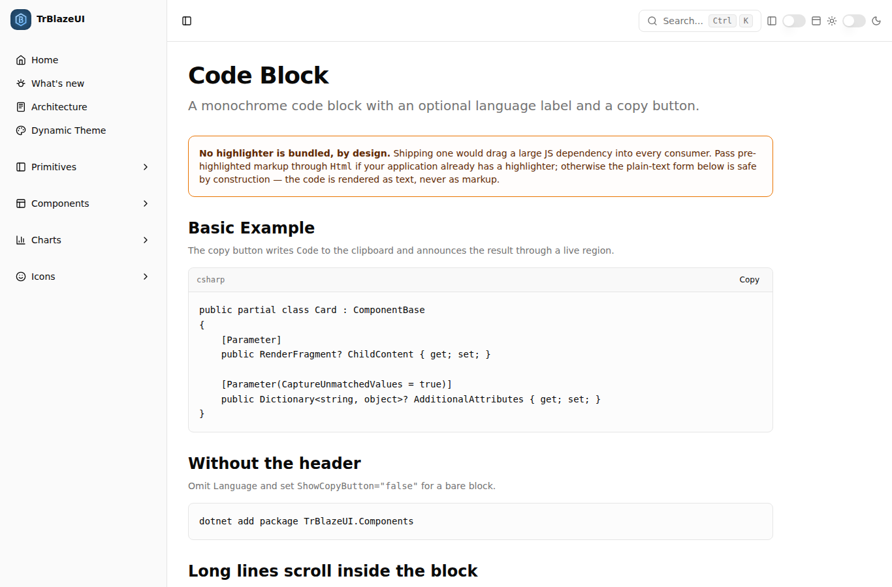
CenteredPanel (/components/centered-panel)#
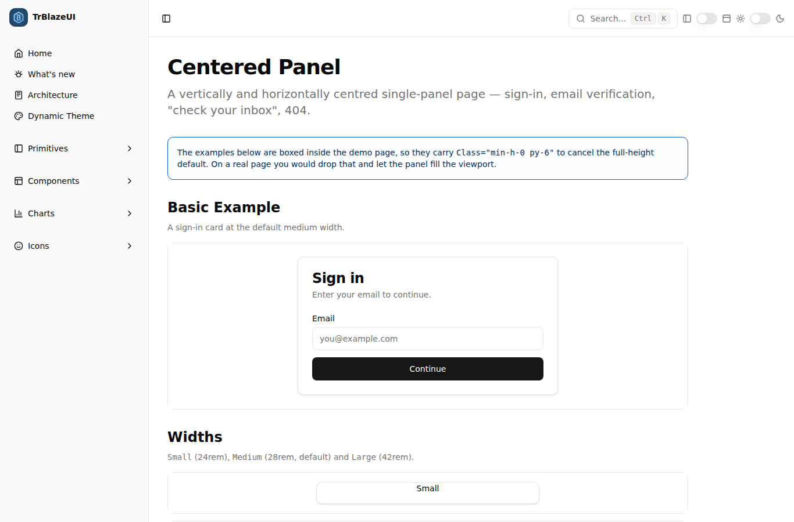
6.2 Earlier sampled key screens (2026-06-30; datatable.png recaptured 2026-07-21)#
Home (/)#
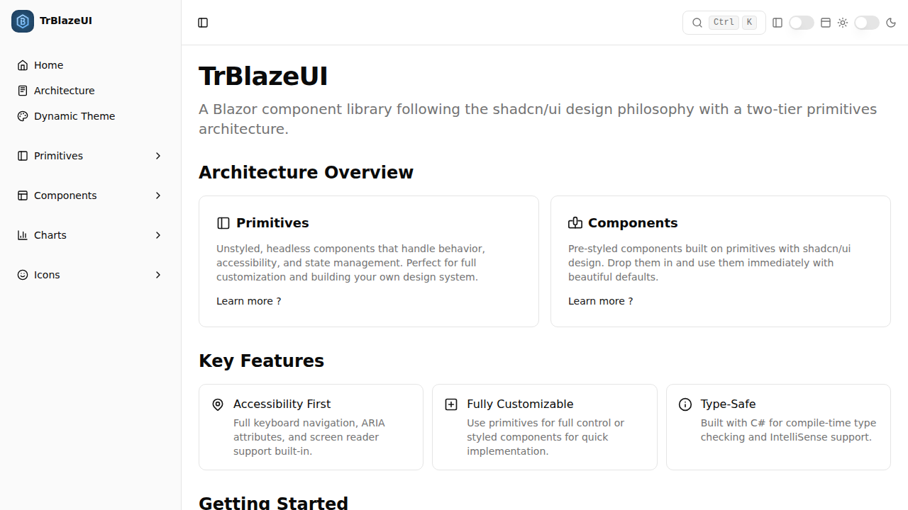
DataTable (/components/datatable)#
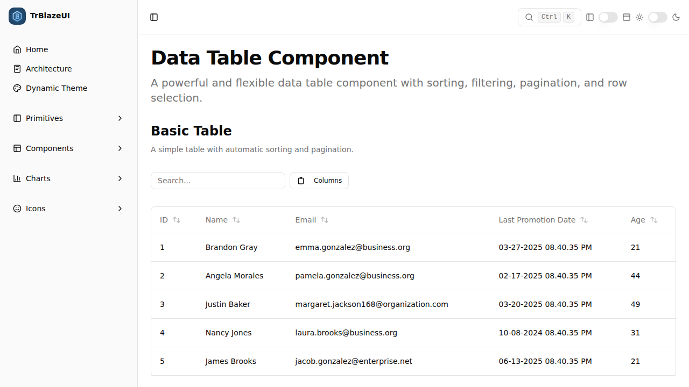
Bar Chart (/charts/bar)#
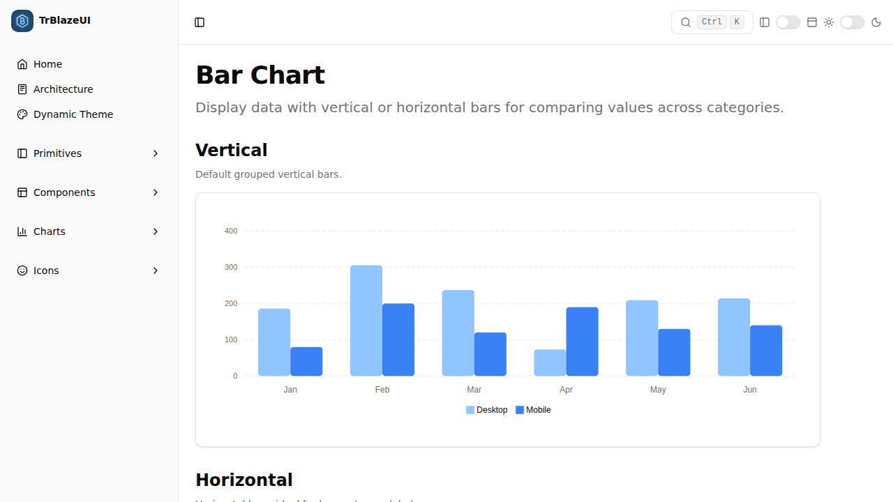
Toolbar (/components/toolbar)#
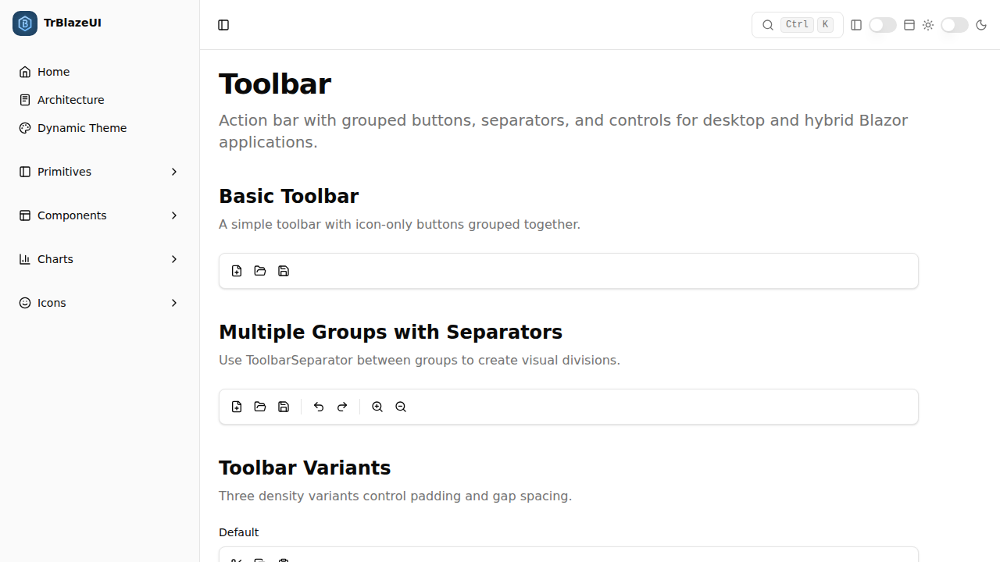
Icons (/icons)#
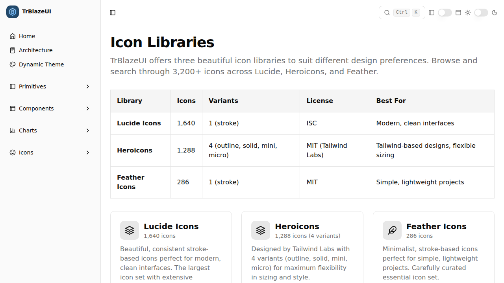
Last updated: 2026-08-11 (handoff, 2.1.0 as-built) · RUNTIME-VERIFIED — 25/25 on the 2.1.0 screens 2026-08-11, plus 65/65 + 15/15 REQ-UI-017 gates; screenshots for the earlier sampled key screens in docs/screenshots/TrBlazeUI/